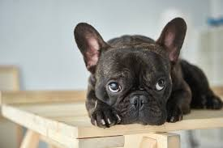
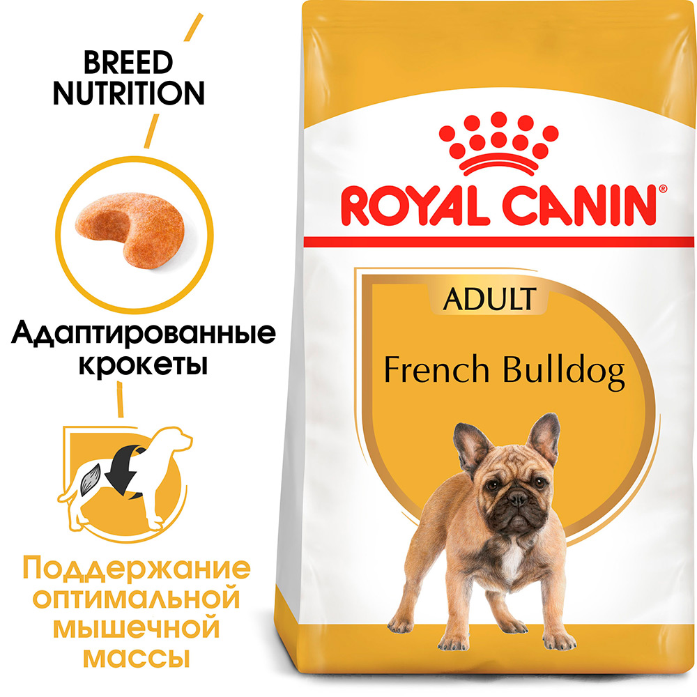

Обеспечивает оптимальную безопасность пищеварения и поддерживает баланс кишечной флоры щенков породы французский бульдог.
Здоровая кожа:
Корм усиливает защитные свойства кожи и смягчает воспалительные реакции благодаря присутствию в его составе специального «кожного комплекса».
Мощная природная защита:
Поддерживает естественные защитные механизмы и помогает противостоять опасностям, угрожающим здоровью щенка французского бульдога.
Специально для челюстей брахицефала:
Особая форма крокет корма помогает щенку французского бульдога легко захватывать корм, а их размер и текстура способстаует хорошему разгрызанию.
Проследите, чтобы у вашей собаки всегда была свежая вода!